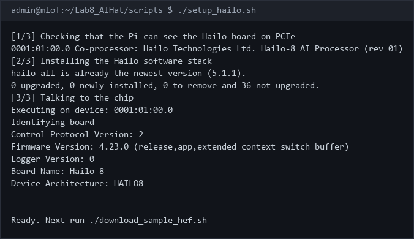
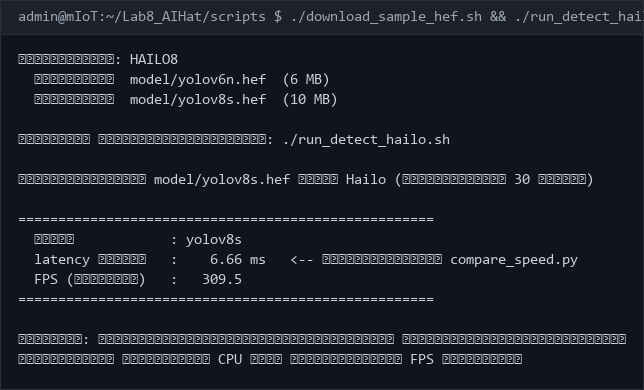
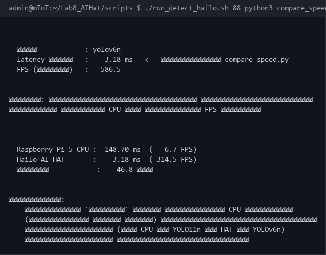

inference เฉลี่ยบน CPU ไว้sudo raspi-config > Advanced Options > PCIe Speed)best.pt ของเราไปรันบนชิป
เหตุผลอยู่ในหัวข้อทฤษฎีของ Step 2 ซึ่งเป็นบทเรียนสำคัญที่สุดของแล็บนี้cd ~/Lab8_AIHat/scripts chmod +x *.sh ./setup_hailo.sh

Device Architecture: HAILO8 — ถ้าถึงตรงนี้ได้แปลว่าฮาร์ดแวร์พร้อมแล้ว| บรรทัดในผลลัพธ์ | แปลว่าอะไร |
|---|---|
Co-processor: Hailo Technologies Ltd. Hailo-8 AI Processor | ระบบเห็นบอร์ดบนบัส PCIe แล้ว — เป็นด่านแรก ถ้าไม่ผ่านคือปัญหาฮาร์ดแวร์ล้วน ๆ |
Firmware Version: 4.23.0 | เฟิร์มแวร์บนตัวชิป ต้องเข้ากันได้กับ HailoRT ที่ลงบน Pi ถ้าคนละรุ่นจะฟ้องตอนสั่งรันโมเดล |
Device Architecture: HAILO8 | ตัวสำคัญที่สุด — บอกว่าเป็นรุ่น HAILO8 (26 TOPS) หรือ HAILO8L (13 TOPS) ซึ่งใช้ไฟล์โมเดลคนละไฟล์กัน |
hailo-all is already the newest version | ติดตั้งไว้อยู่แล้ว ถ้าเป็นเครื่องใหม่จะเห็นการดาวน์โหลดแทน และต้องรีบูตหนึ่งครั้งก่อนใช้งาน |
setup_hailo.shif lspci | grep -qi hailo; then
lspci | grep -i hailo
else
echo " ไม่พบบอร์ด Hailo บน PCIe"
exit 1
fi
sudo apt-get install -y hailo-all
if hailortcli fw-control identify; then
echo "พร้อมใช้งาน"
else
echo "ติดตั้งเสร็จแล้วแต่ยังคุยกับชิปไม่ได้ - ต้องรีบูตก่อน"
exit 1
fi
| lspci | grep hailo | แยกปัญหาฮาร์ดแวร์ออกจากปัญหาซอฟต์แวร์ตั้งแต่บรรทัดแรก ถ้า PCIe ไม่เห็นบอร์ด การไปติดตั้งซอฟต์แวร์ต่อก็เสียเวลาเปล่า |
| hailo-all | แพ็กเกจรวม ลงให้ครบทั้งไดรเวอร์ PCIe, HailoRT, TAPPAS และไฟล์โมเดลตัวอย่าง ไม่ต้องไล่ลงทีละตัว |
| if hailortcli ... | หลังติดตั้งครั้งแรกไดรเวอร์ยังไม่ถูกโหลด คำสั่งนี้จะล้มเหลว สคริปต์จึงบอกให้รีบูต แทนที่จะจบเงียบ ๆ แล้วปล่อยให้ไปงงเอาเองใน Step ถัดไป |
./download_sample_hef.sh ./run_detect_hailo.sh yolov8s

best.pt ของเราไปรันไม่ได้ชิป Hailo ไม่ได้รันโมเดลแบบที่ CPU รัน มันรันได้เฉพาะไฟล์ .hef
(Hailo Executable Format) ซึ่งไม่ใช่แค่ "อีกนามสกุลหนึ่ง" แต่เป็นผังการเดินข้อมูลที่ถูกวางลงบนตัวชิปแล้ว
ลำดับการแปลงเต็ม ๆ เป็นแบบนี้:
best.pt --(Lab 6)--> best.onnx --(Hailo Dataflow Compiler)--> best.hef PyTorch มาตรฐานกลาง ผังสำหรับชิปตัวนี้โดยเฉพาะ
ตัวที่ทำขั้นสุดท้ายคือ Hailo Dataflow Compiler (DFC) ซึ่ง:
บนตัว Pi มีแค่ HailoRT ซึ่งเป็นตัว "รัน" ไม่ใช่ตัว "แปลง" ตรวจได้เองด้วย:
$ hailo --help
usage: hailo [-h] [--version]
{fw-update,fw-control,scan,run,benchmark,monitor,parse-hef,measure-power,...}
สังเกตว่าไม่มีคำสั่งอย่าง compile หรือ optimize เลย
Lab นี้จึงวัดความสามารถของฮาร์ดแวร์ด้วยโมเดลมาตรฐานที่คอมไพล์มาแล้ว
ซึ่งติดมากับแพ็กเกจ hailo-models อยู่ที่ /usr/share/hailo-models/
download_sample_hef.shARCH=$(hailortcli fw-control identify \
| awk -F': *' '/Device Architecture/{print $2}' | tr -d ' ')
case "$ARCH" in
HAILO8) SUFFIX=h8 ;;
HAILO8L) SUFFIX=h8l ;;
esac
for name in yolov6n yolov8s; do
src="$ZOO/${name}_${SUFFIX}.hef"
[ -f "$src" ] && cp -f "$src" "model/${name}.hef"
done
| ARCH=$(...) | ถามตัวชิปเองว่าเป็นรุ่นไหน แทนที่จะให้นักศึกษาเดา — Hailo-8 กับ Hailo-8L ใช้ไฟล์คนละตัว ใส่ผิดจะรันไม่ขึ้นพร้อม error ที่อ่านไม่รู้เรื่อง |
| SUFFIX=h8 / h8l | ชื่อไฟล์ในคลังโมเดลลงท้ายด้วยรหัสรุ่น เช่น yolov8s_h8.hef กับ yolov8s_h8l.hef |
| $ZOO | /usr/share/hailo-models/ ที่แพ็กเกจ hailo-models ลงไว้ให้ — ไม่ต้องต่อเน็ตโหลดใหม่ ต่างจากสคริปต์เดิมที่แค่พิมพ์ลิงก์ให้ไปหาเอง |
./run_detect_hailo.sh python3 compare_speed.py --cpu 149.1 --hailo 3.18

| โมเดล | รันบน | latency | FPS |
|---|---|---|---|
| YOLO11n @640 (ของเรา) | Pi 5 CPU | 149.1 ms | 6.1 |
| YOLOv6n @640 | Hailo-8 | 3.18 ms | 586.6 |
| YOLOv8s @640 | Hailo-8 | 6.66 ms | 309.4 |
hailortcli benchmark จับเวลาเฉพาะที่อยู่ในชิป ส่วน Lab 7 จับเวลาไปป์ไลน์ที่มี preprocess/postprocess บน CPU อยู่ด้วยจาก Lab 7 เวลาต่อเฟรมบน CPU แยกได้เป็น 3 ท่อน:
| ท่อน | บน CPU ล้วน | ถ้ายก inference ไปให้ NPU |
|---|---|---|
| preprocess | 10.9 ms | 10.9 ms (ยังอยู่บน CPU) |
| inference | 149.1 ms | ~3.2 ms |
| postprocess | 4.1 ms | 4.1 ms (ยังอยู่บน CPU) |
| รวม | 164.1 ms (6.1 FPS) | ~18.2 ms (~55 FPS) |
เร่งเฉพาะ inference ได้ 47 เท่า แต่ทั้งระบบเร็วขึ้นราว 9 เท่า เท่านั้น เพราะ 15 ms ที่เหลือบน CPU ไม่ได้หายไปไหน — และตอนนี้มันกลายเป็นส่วนที่ช้าที่สุดแทน
นี่คือ กฎของอัมดาห์ล (Amdahl's Law): เพดานของการเร่งความเร็วถูกกำหนดโดย สัดส่วนงานที่เร่งไม่ได้ ไม่ใช่โดยว่าเร่งส่วนที่เร่งได้แรงแค่ไหน
ในระบบจริงจึงต้องยกงานอื่นออกจาก CPU ด้วย เช่นให้ GPU/ISP ของ Pi ย่อภาพให้
หรือใช้ไปป์ไลน์ของ rpicam-apps ที่ต่อกล้องเข้ากับ Hailo โดยตรงไม่ผ่าน Python
run_detect_hailo.shhailortcli benchmark "$MODEL" > "$LOG" 2>&1
FPS=$(awk -F'= *' '/FPS +\(hw_only\)/{print $2}' "$LOG")
LAT=$(awk -F'= *' '/Latency +\(hw\)/{print $2}' "$LOG" | awk '{print $1}')
| hailortcli benchmark | ยิงข้อมูลเข้าชิปรัว ๆ แล้ววัด 2 อย่าง: throughput (ทำได้กี่เฟรมต่อวินาที) กับ latency (หนึ่งเฟรมใช้เวลาเท่าไร) — สองค่านี้ไม่ใช่ส่วนกลับของกันและกัน เพราะชิปทำหลายเฟรมซ้อนกันได้ |
| > "$LOG" | เก็บลงไฟล์ก่อน เพราะผลดิบมี progress bar เขียนทับกันเป็นร้อยบรรทัด อ่านบนจอไม่ไหว |
| awk ... /FPS/ | ดึงเฉพาะบรรทัดสรุปออกมาแสดงในรูปแบบเดียวกับ Lab 7 เพื่อให้วางเทียบกันได้ทันที |
| อาการ / ข้อความที่ขึ้น | สาเหตุ | วิธีแก้ |
|---|---|---|
ไม่พบบอร์ด Hailo บน PCIe (lspci ไม่เจอ) |
สาย FPC ไม่แน่น เสียบกลับด้าน หรือยังไม่ได้เปิด PCIe | ปิดเครื่องแล้วเช็คสาย จากนั้นเปิด PCIe ด้วย sudo raspi-config > Advanced Options > PCIe Speed แล้วรีบูต |
ติดตั้ง hailo-all เสร็จแล้วแต่ hailortcli ยังคุยกับชิปไม่ได้ |
ไดรเวอร์ PCIe ของ Hailo ยังไม่ถูกโหลดเข้า kernel | sudo reboot หนึ่งครั้ง แล้วรัน ./setup_hailo.sh ซ้ำ |
สั่งรัน .hef แล้วไม่ขึ้น หรือ error เรื่อง architecture |
ใช้ไฟล์ของ Hailo-8L บนชิป Hailo-8 (หรือกลับกัน) | เช็ครุ่นด้วย hailortcli fw-control identify แล้วเลือกไฟล์ให้ตรง — download_sample_hef.sh ทำให้อัตโนมัติแล้ว |
[HailoRT CLI] [error] CHECK failed - Power measurement not supported. |
บอร์ด AI HAT บางรุ่นไม่มีวงจรวัดกระแสในตัว | ข้ามการวัดพลังงานไป (ตัดตัวเลือก --measure-power ออก) ถ้าต้องการตัวเลขจริงต้องใช้มิเตอร์วัดที่สาย USB-C ของ Pi |
หาคำสั่งคอมไพล์ .pt เป็น .hef บน Pi ไม่เจอ |
บน Pi มีแค่ HailoRT ซึ่งเป็นตัวรัน ไม่ใช่ตัวคอมไพล์ | ต้องใช้ Hailo Dataflow Compiler บนเครื่อง x86 Linux แยกต่างหาก (ดูทฤษฎีใน Step 2) |
0001:01:00.0),
hailo-all 5.1.1, HailoRT/เฟิร์มแวร์ 4.23.0, Device Architecture HAILO8:
yolov6n_h8.hef ได้ 586.6 FPS / latency 3.18 ms และ yolov8s_h8.hef ได้ 309.4 FPS / latency 6.66 ms
เทียบกับ CPU ของ Pi เครื่องเดียวกันใน Lab 7 ที่ inference 149.1 ms
การวัดพลังงานด้วย --measure-power ใช้กับบอร์ดตัวนี้ไม่ได้hailortcli fw-control identify ที่ระบุรุ่นชิปของกลุ่มตัวเอง